Particles are precisely what you expect from that name. They are very popular and can be used to achieve various effects such as stars, smoke, rain, dust, fire, and many other things.
The good thing with particles is that you can have hundreds of thousands of them on screen with a reasonable frame rate. The downside is that each particle is composed of a plane (two triangles) always facing the camera.
Creating particles is as simple as making a Mesh. We need a BufferGeometry, a material that can handle particles (PointsMaterial), and instead of producing a Mesh we need to create a Points.
The starter is only composed of a cube in the middle of the scene. That cube ensures that everything is working.
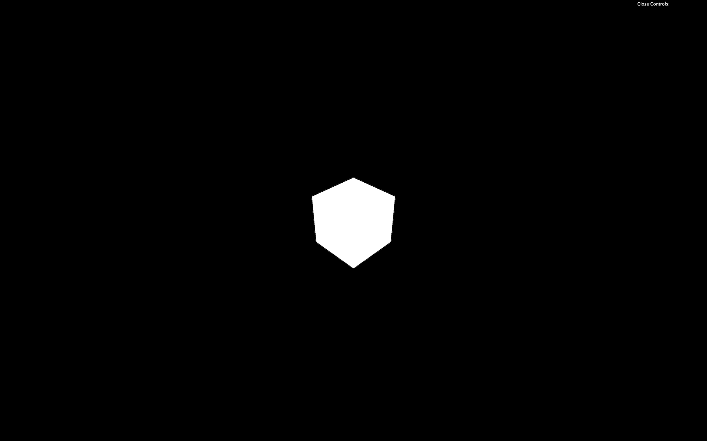
Let's get rid of our cube and create a sphere composed of particles to start.
You can use any of the basic Three.js geometries. For the same reasons as for the Mesh, it's preferable to use BufferGeometries. Each vertex of the geometry will become a particle:
We need a special type of material called PointsMaterial. This material can already do a lot, but we will discover how to create our own particles material to go even further in a future lesson.
The PointsMaterial has multiple properties specific to particles like the size to control all particles size and the sizeAttenuation to specify if distant particles should be smaller than close particles:
As always, we can also change those properties after creating the material:
Finally, we can create the final particles the same way we create a Mesh, but this time by using the Points class. Don't forget to add it to the scene:
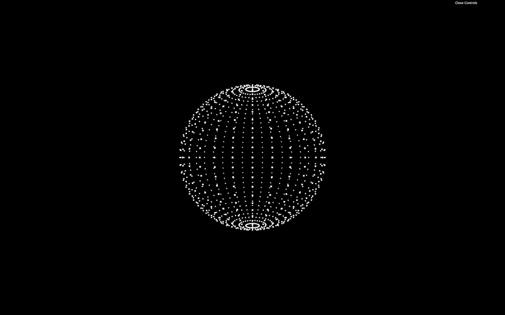
That was easy. Let's customize those particles.
To create a custom geometry, we can start from a BufferGeometry, and add a position attribute as we did in the Geometries lesson. Replace the SphereGeometry with custom geometry and add the 'position' attribute as we did before:
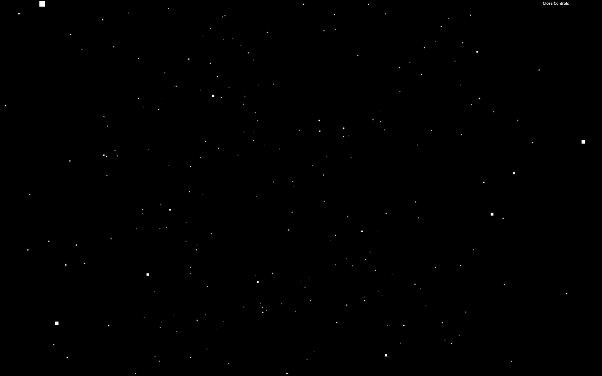
Don't be frustrated if you can't pull out this code by yourself. It's a little complex, and variables are using strange formats.
You should get a bunch of particles all around the scene. Now is an excellent time to have fun and test the limits of your computer. Try 5000, 50000, 500000 maybe. You can have millions of particles and still have a reasonable frame rate.
You can imagine that there are limits. On an inferior computer or a smartphone, you won't be able to have a 60fps experience with millions of particles. We are also going to add effects that will drastically reduce the frame rate. But still, that's quite impressive.
For now, let's keep the count to 5000 and change the size to 0.1:
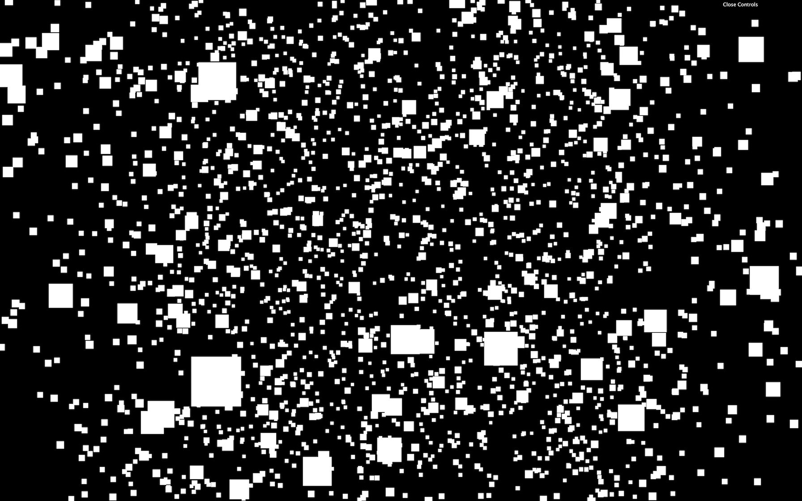
We can change the color of all particles with the color property on the PointsMaterial. Don't forget that you need to use the Color class if you're changing this property after instancing the material:
We can also use the map property to put a texture on those particles. Use the TextureLoader already in the code to load one of the textures located in /static/textures/particles/:
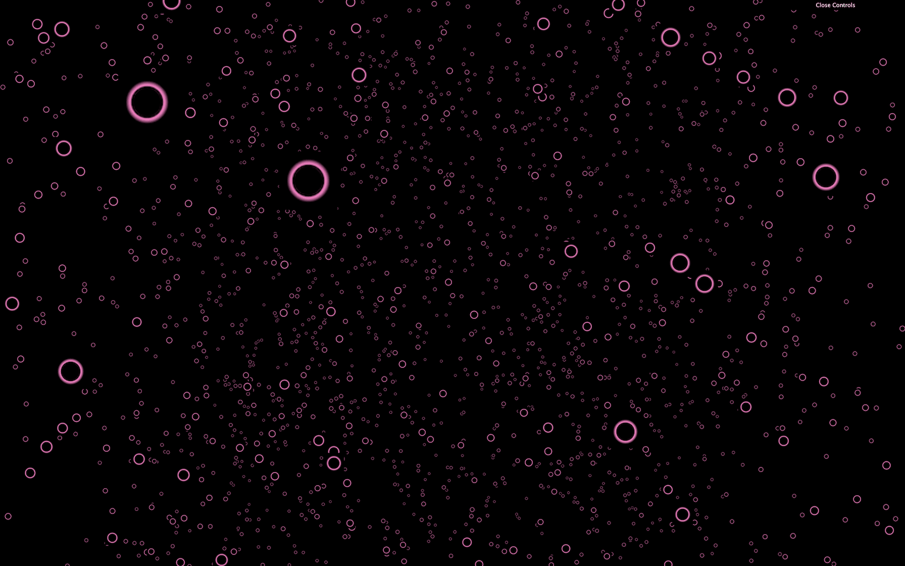
These textures are resized versions of the pack provided by Kenney and you can find the full pack here: https://www.kenney.nl./assets/particle-pack. But you can also create your own.
As you can see, the color property is changing the map, just like with the other materials.
If you look closely, you'll see that the front particles are hiding the back particles.
We need to activate transparency with transparent and use the texture on the alphaMap property instead of the map:
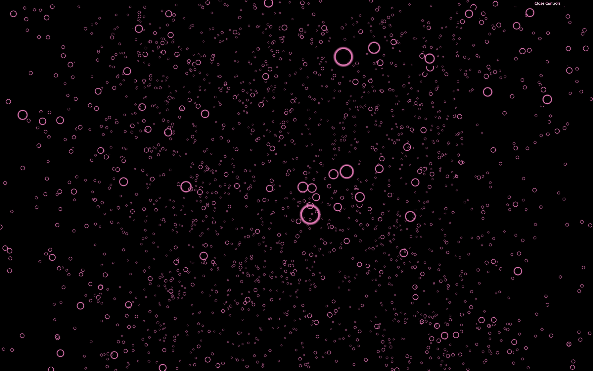
Now that's better, but we can still randomly see some edges of the particles.
That is because the particles are drawn in the same order as they are created, and WebGL doesn't really know which one is in front of the other.
There are multiple ways of fixing this.
The alphaTest is a value between 0 and 1 that enables the WebGL to know when not to render the pixel according to that pixel's transparency. By default, the value is 0 meaning that the pixel will be rendered anyway. If we use a small value such as 0.001, the pixel won't be rendered if the alpha is 0:
This solution isn't perfect and if you watch closely, you can still see glitches, but it's already more satisfying.
When drawing, the WebGL tests if what's being drawn is closer than what's already drawn. That is called depth testing and can be deactivated (you can comment the alphaTest):
While this solution seems to completely fix our problem, deactivating the depth testing might create bugs if you have other objects in your scene or particles with different colors. The particles might be drawn as if they were above the rest of the scene.
Add a cube to the scene to see that:
As we said, the WebGL is testing if what's being drawn is closer than what's already drawn. The depth of what's being drawn is stored in what we call a depth buffer. Instead of not testing if the particle is closer than what's in this depth buffer, we can tell the WebGL not to write particles in that depth buffer (you can comment the depthTest):
In our case, this solution will fix the problem with almost no drawback. Sometimes, other objects might be drawn behind or in front of the particles depending on many factors like the transparency, in which order you added the objects to your scene, etc.
We saw multiple techniques, and there is no perfect solution. You'll have to adapt and find the best combination according to the project.
Currently, the WebGL draws the pixels one on top of the other.
By changing the blending property, we can tell the WebGL not only to draw the pixel, but also to add the color of that pixel to the color of the pixel already drawn. That will have a saturation effect that can look amazing.
To test that, simply change the blending property to THREE.AdditiveBlending (keep the depthWrite property):
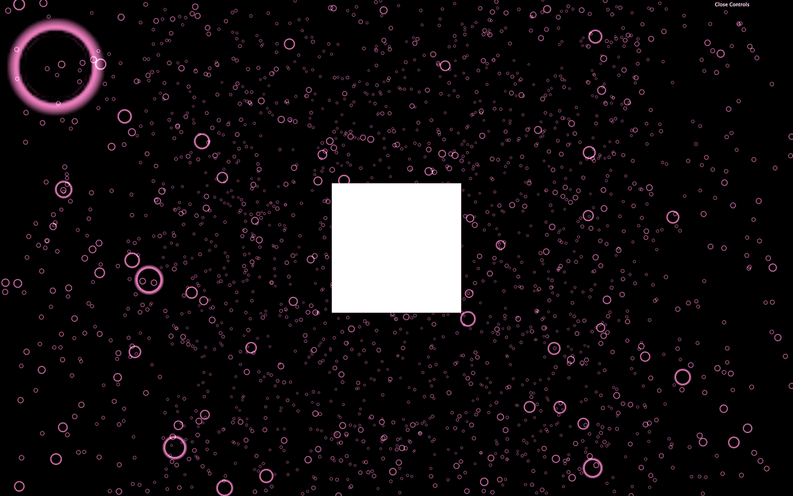
Add more particles (let's say 20000) to better enjoy this effect.
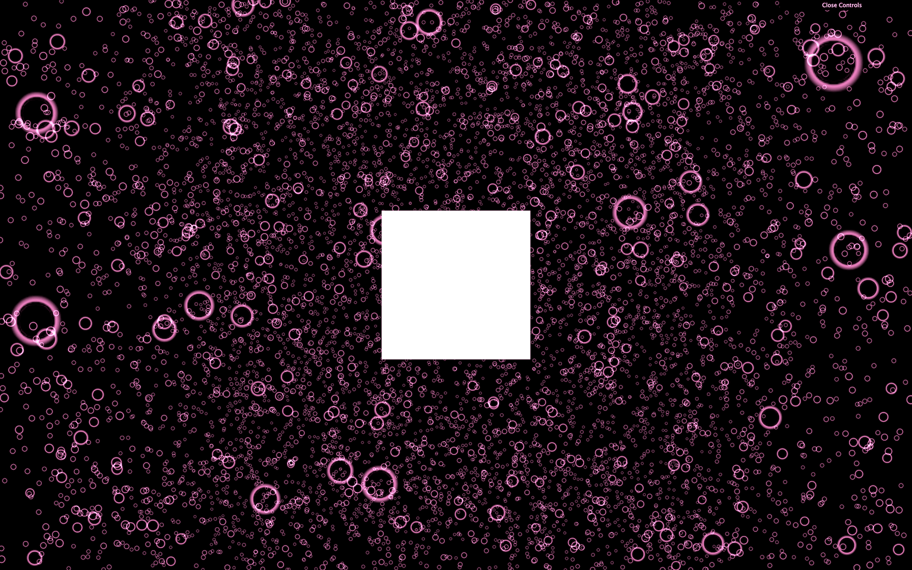
But be careful, this effect will impact the performances, and you won't be able to have as many particles as before at 60fps.
Now, we can remove the cube.
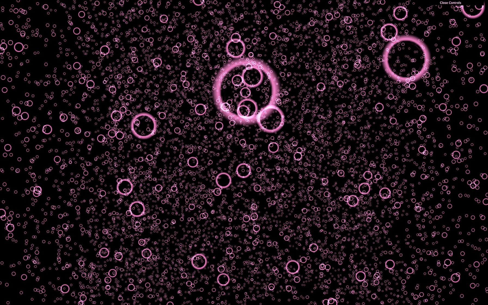
We can have a different color for each particle. We first need to add a new attribute named color as we did for the position. A color is composed of red, green, and blue (3 values), so the code will be very similar to the position attribute. We can actually use the same loop for these two attributes:
Be careful with singulars and plurals.
To activate those vertex colors, simply change the vertexColors property to true:
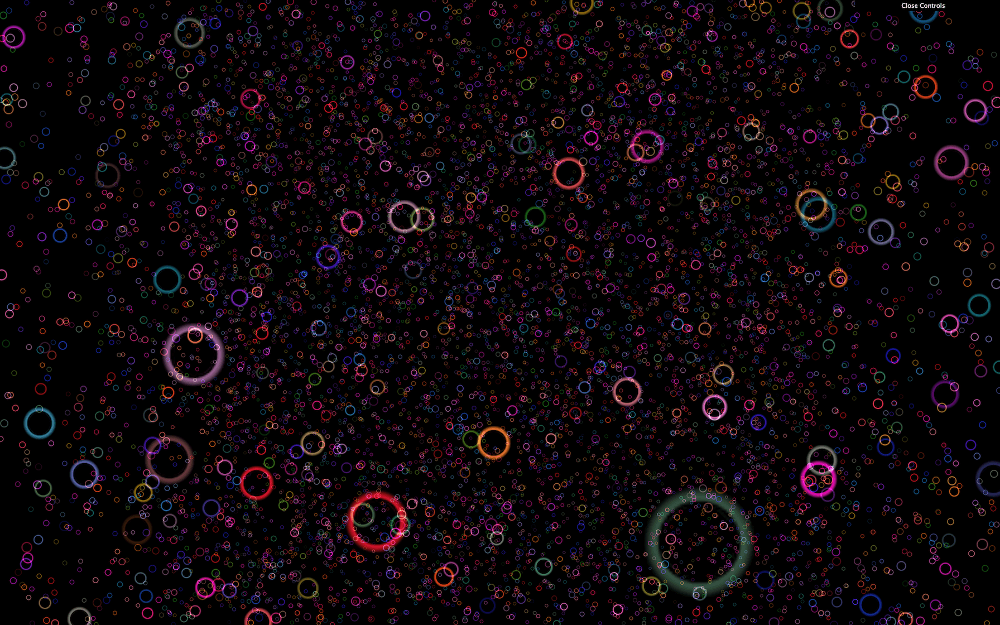
The main color of the material still affects these vertex colors. Feel free to change that color or even comment it.
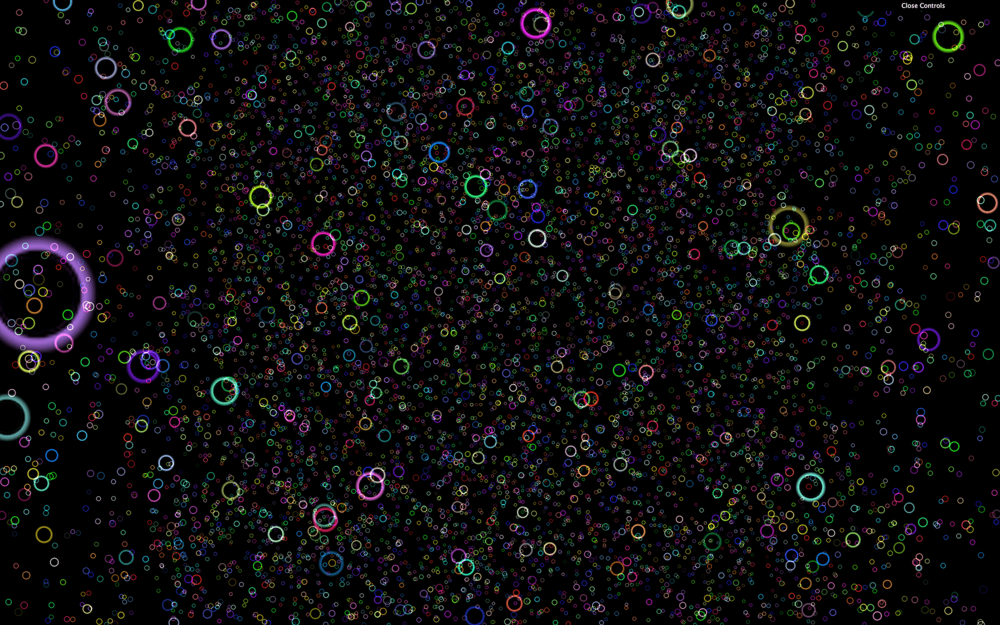
There are multiple ways of animating particles.
Because the Points class inherits from the Object3D class, you can move, rotate and scale the points as you wish.
Rotate the particles in the tick function:
While this is already cool, we want more control over each particle.
Another solution would be to update each vertex position separately. This way, vertices can have different trajectories. We are going to animate the particles as if they were floating on waves but first, let's see how we can update the vertices.
Start by commenting the previous rotation we did on the whole particles:
To update each vertex, we have to update the right part in the position attribute because all the vertices are stored in this one dimension array where the first 3 values correspond to the x, y and z coordinates of the first vertex, then the next 3 values correspond to the x, y and z of the second vertex, etc.
We only want the vertices to move up and down, meaning that we are going to update the y axis only. Because the position attribute is a one dimension array, we have to go through it 3 by 3 and only update the second value which is the y coordinate.
Let's start by going through each vertices:
Here, we chose to have a simple for loop that goes from 0 to count and we created a i3 variable inside that goes 3 by 3 simply by multiplying i by 3.
The easiest way to simulate waves movement is to use a simple sinus. First, we are going to update all vertices to go up and down on the same frequency.
The y coordinate can be access in the array at the index i3 + 1:
Unfortunately, nothing is moving. The problem is that Three.js has to be notified that the geometry changed. To do that, we have to set the needsUpdate to true on the position attribute once we are done updating the vertices:
All the particles should be moving up and down like a plane.
That's a good start and we are almost there. All we need to do now is apply an offset to the sinus between the particles so that we get that wave shape.
To do that, we can use the x coordinate. And to get this value we can use the same technique that we used for the y coordinate but instead of i3 + 1, it's just i3:
You should get beautiful waves of particles. Unfortunately, you should avoid this technique. If we have 20000 particles, we are going through each one, calculating a new position, and updating the whole attribute on each frame. That can work with a small number of particles, but we want millions of particles.
To update these millions of particles on each frame with a good framerate, we need to create our own material with our own shaders. But shaders are for a later lesson.